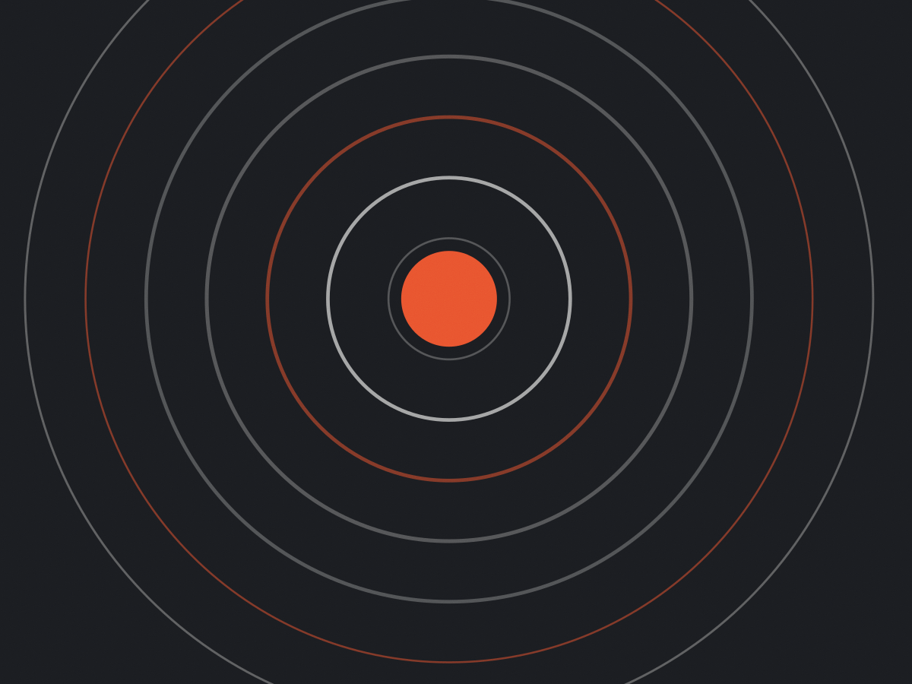

Brás · turma de 12 · 2026
Doze semanas
até a prova
Preparatório para o TAF de bombeiro e de polícia. A prova tem data, a gente tem doze semanas — e cada uma delas está escrita na planilha que você leva para casa no primeiro dia.
Ver a próxima turma
O que a prova cobra
Quatro estações: barra, flexão, abdominal e corrida. A meta de cada uma é definida na avaliação da primeira semana, com o edital do seu concurso na mão — não com número genérico.
- 01Barra fixa
Pegada pronada, sem balanço. Trabalhamos escapular antes de tentar repetição — quem não tem nenhuma começa na barra assistida.
- 02Flexão de braço
Peito no chão, quadril alinhado. Contagem válida é a que o avaliador aceita: o treino já é feito com essa exigência.
- 03Abdominal
Série cronometrada. Core treinado em isometria e em resistência, não só em repetição solta.
- 04Corrida
2.400 m em pista. Treino de ritmo por zonas, com teste de 1.000 m a cada quatro semanas para ajustar o pace.
Inscrição
O que vem junto com a mensalidade
- Planilha de 12 semanas impressa, com carga e repetição por dia
- Corrida acompanhada em pista, um sábado por mês
- Vídeo de execução corrigido por WhatsApp em até 24 h
- Simulado completo do TAF na semana 4, 8 e 12
Próxima turma
2 de novembro
Doze vagas. A avaliação física de entrada é gratuita e dura quarenta minutos — se você não estiver pronto para começar, a gente diz na hora.
- Vagas restantes
- 4
- Avaliação
- Gratuita
- Início
- Seg, 6h ou 19h
Grade da semana
Duas turmas por dia. Você escolhe o horário fixo na matrícula e pode repor em qualquer outra turma da semana.
| Dia | 6h | 19h | Sábado |
|---|---|---|---|
| Segunda | Força — barra | Força — barra | — |
| Terça | Metabólico | Metabólico | — |
| Quarta | Força — empurrar | Força — empurrar | — |
| Quinta | Core e abdominal | Core e abdominal | — |
| Sexta | Metabólico | Metabólico | — |
| Sábado | — | — | Corrida em pista, 8h |
Quanto custa
Sem taxa de matrícula. A mensalidade cobre as aulas, a planilha e os simulados.
- Mensalidade3 aulas por semana · horário fixoR$ 320
- Mensalidade reduzida2 aulas por semanaR$ 240
- Aula avulsasujeita a vagaR$ 45
- Simulado do TAFaberto também para quem não é alunoR$ 60
Perguntas de quem está chegando
Nunca treinei. Consigo começar?
Sim, e é o caso mais comum. A primeira semana é de adaptação: carga baixa, técnica antes de volume. Quem não tem nenhuma barra começa na assistida com elástico.
E se eu já tenho data de prova em menos de doze semanas?
A gente monta um bloco encurtado, mas avisa: com menos de oito semanas o ganho é menor e o risco de lesão sobe. Nesse caso o foco passa a ser não perder o que você já tem.
O que eu preciso trazer?
Tênis de corrida, camiseta, garrafa e uma toalha. Magnésio e elástico a gente fornece. Não tem vestiário com chuveiro — o box abre 20 minutos antes da turma.
Quantas vagas sobram por turma?
Doze. Quando enche, abre lista de espera e a pessoa entra na turma seguinte, mantendo o valor da avaliação.
A prova não espera. A planilha também não.
Rua Bresser, 1.240 — Brás, São Paulo. A 600 m do metrô Bresser-Mooca.